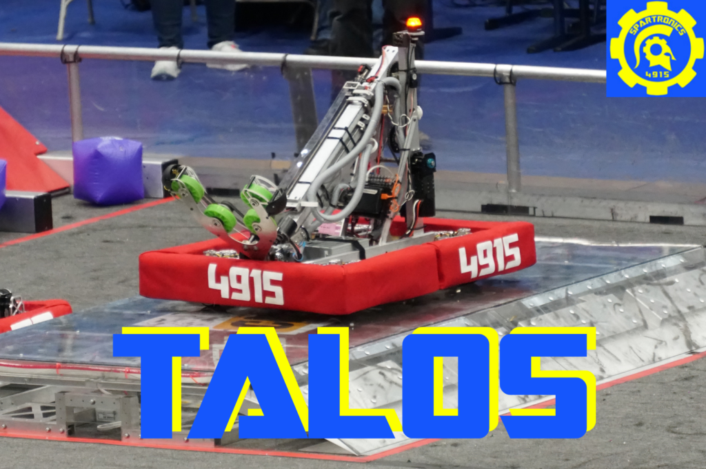
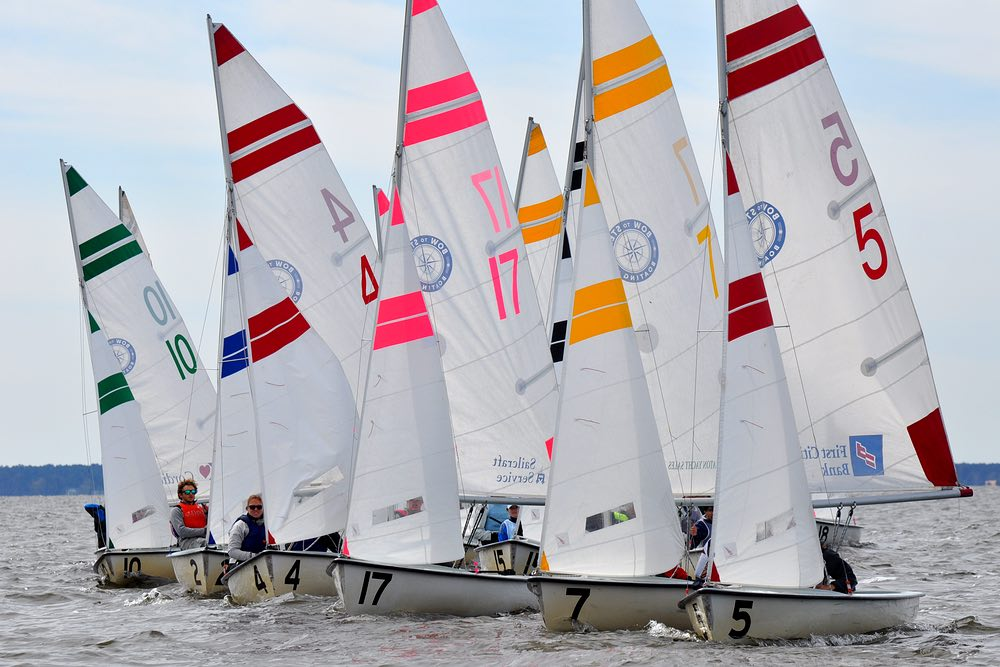

My name is Joseph Tappen. I am a student at Bainbridge High School. I am a regular programmer and pretty well versed in Javascript, Python, and HTML + CSS. I've made projects such as simple chat applications, chrome extensions, and web games. I am mostly self learned but have taken a few courses.
I am a designer on the BHS robotics team. This year we built an impressive robot with the capability to accurately lift and place game pieces onto shelves and poles. Its name was TALOS, after the figure from Greek mythology.
I am also a sailor on the BHS sailing team. We had a good season this year, qualifying for one national competition and getting invited to another.